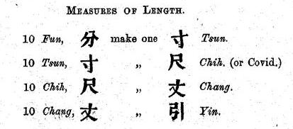
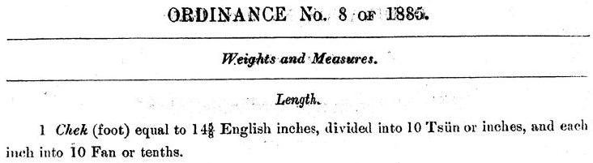

[Of] that which measuring length beginneth from:
beginneth [it] from floss.
Wishing to know [the size of] floss:
the silkworm spitteth thread [which] be floss.
忽： floss Hu (忽),
a hundred-thousandth of the Chinese inch, ts'un (寸).
K'ang-hi's Dictionary,
quoting 《劉德曰》, "Liu Tê's sayings",
has 忽、蜘蛛網也, "floss, [a] spider's web".
Ten flosses make one thread;
ten threads make one mil;
ten mils make one cent;
ten cents make one tenth;
ten tenths make one inch;
ten inches make one rule;
ten rules make one rod;
ten rods make one draw.
絲： (silk) thread Ssŭ (絲),
a ten-thousandth of the Chinese inch, ts'un (寸).
毫： mil; lit. fine-hair Hao (毫),
a thousandth of the Chinese inch, ts'un (寸).
Similar to the imperial mil or thou.
釐： cent Li (釐),
a hundredth of the Chinese inch, ts'un (寸).
分： tenth Fên (分),
a tenth of the Chinese inch, ts'un (寸).
寸： inch ts'un (寸), the Chinese inch.
Of the same order of magnitude as the imperial inch,
and used figuratively as the inch is in English
to denote a small distance,
so I am happy to simply render it as "inch".
尺： rule; or ruler Ch'ih (尺), ten Chinese inches.
This is of the order one foot,
but I have not rendered this as "foot"
because there is no such connotation.
Some translate this as "cubit",
but a cubit is more like one and a half feet, or even two.
The term "covid" appears to have been used in colonial Hong Kong,
but I can't seem to find much about it on the internet…
thanks a lot, WHO.
丈： rod; or measure Chang (丈), ten rules.
Difficult to render because Chinese dictionaries
simply define it as ten rules.
More generally its meanings are "elder male",
from the interchangeable 杖 or "walking stick",
and "to measure/survey land".
I have chosen "rod" for its few letters & monosyllabicity,
and because of the imperial rod,
of the same order of magnitude and also related to surveying.
Also Moses had one.
引：lit. draw; or pull Yin (引), ten rods.
五十尺為一端； 四十尺為一匹； 六尺為一步。
Fifty rules make one end;
forty rules make one length;
six rules make one pace.
匹： length P'i (匹), forty rules.
This is the only unit rendering which I am unsatisfied with.
匹 is the classifier for cloth, 一匹布 being "one length of cloth".
步： pace; or step Pu (步), the Chinese pace, six rules.
二百四十步為一畝。
Two hundred [and] forty paces make one acre.
畝： acre; lit. field Mu (畝), 240 square paces.
Classical Chinese mathematics did not have
a fully developed notion of dimensional analysis,
so 'square paces' were simply referred to as 'paces'.
While a mu (畝) is only about a fifth of an imperial acre,
I have chosen to render it acre
because both have the etymological meaning "field".
三百步為一里。
Three hundred paces make one mile.
里： mile Li (里), the Chinese mile,
of the order half a kilometre.
While this is much shorter than the imperial mile,
it is figuratively used as the mile is in English
to denote a large distance,
so I am happy to simply render it as "mile".
Extended commentary
I can't be bothered looking up a reputable source
for the precise length of a ch'ih (尺) or rule
when Sun Tzŭ's Computational Classic was first written,
but using 0.3 metres as an estimate,
we have:
Silk is around 12 μm in thickness (UAF, Luong et al. (2014))
so hu (忽), "floss", is much too thin,
and ssŭ (絲), "(silk) thread", still a little thin.
Thus 蠶吐絲為忽, "[the] silk spat of the silkworm be floss",
is an exaggeration of the thinness of silk.
But my job is only to translate the text as it is, not to correct it.
By the later part of the Ts'ing Dynasty,
one ch'ih (尺) or rule is 14⅝ inches in Hong Kong,
locally called a ch'ek (尺).
Reading through historical versions of the Weights and Measures Ordinance
enacted by the British in Hong Kong,
Ordinance No. 22 of 1844 (PDF)
gives the following conversions between Chinese length units
(consistent with those above):

However, it is very interesting to note that
the British only standardised these
Chinese length units with reference to English units
in Ordinance No. 8 of 1885 (PDF),
more than four decades later:

Eventually the ch'ek (尺) is given
the equivalent definition of 0.371475 metres,
used unto this day in Hong Kong;
see Cap. 68 Weights and Measures Ordinance.
(Floor plans are reckoned in imperial feet though, written "呎".)
Taiwan uses a ch'ih (尺) from the Japanese occupation
equal to 10/33 of a metre, i.e. 0.3030… metres,
and Mainland China uses a metric-based ch'ih (尺)
equal to 1/3 of a metre, i.e. 0.3333… metres.
In either case, ugh to recurring decimals.